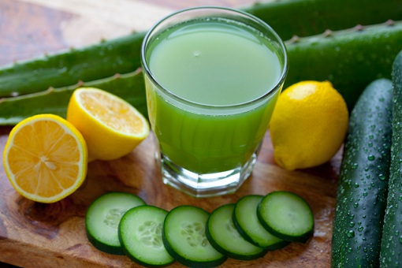

If you're not sure which recipe to use then pick this one. This will be one of the most powerful antioxidant drinks that you will ever drink in your lifetime. It's packed with tons of healthy nutrients such as potassium, iron, calcium, vitamin C, vitamin D, proteins and carbohydrates. This detox drink will do amazing things for your body. For this particular recipe it's best to drink this fat burning drink early in the morning on an empty stomach right after you wake up.

Ingredients
How To Make It